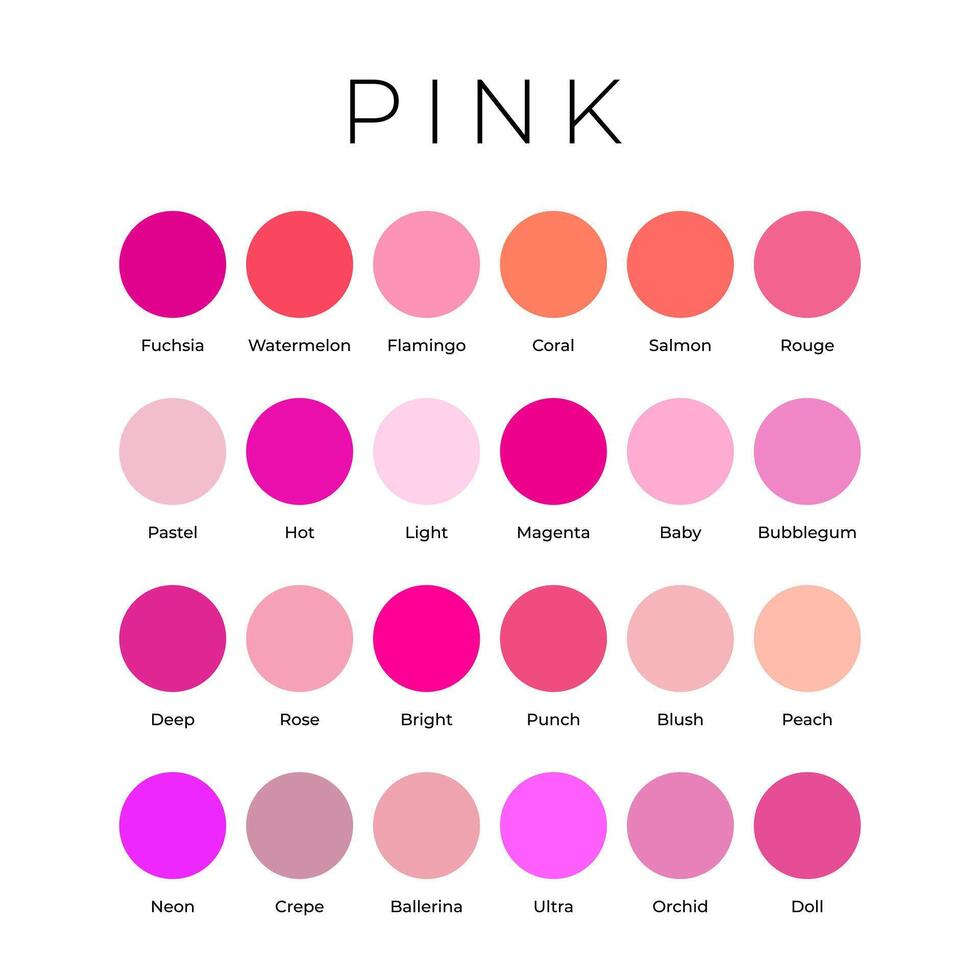
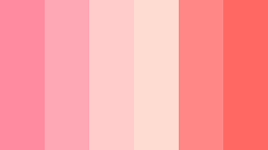

Навигация по странице
- Мой рейтинг оттенков розового
- Изображение розовых оттенков
- Список разных оттенков розового

Мой рейтинг оттенков розового
Здесь можно найти самые разные палитры с розовым.
Палитры с розовым являются одними из самых привлекательных на глаз.
Список разных оттенков розового:
- нежно-розовый
- телесный
- (так называют белый цвет кожи)
- лососевый
- (да, цвета называются и в честь еды!)
- (этот оттенок, к тому же, имеет в себе оранжевый цвет)
